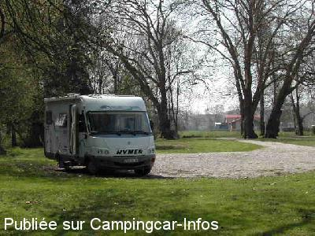

AC = Camping acceptant les camping-cars de :
MONTIERS SUR SAULX
(N° 284)
Accès/adresse :
Chemin de la Forge
Aire naturelle de Camping du Fourneau
55290 MONTIERS SUR SAULX
Aire naturelle de Camping du Fourneau
55290 MONTIERS SUR SAULX
Latitude : (Nord) 48.53704° Décimaux ou 48° 32′ 13′′
Longitude : (Est) 5.2705° Décimaux ou 5° 16′ 13′′
Tarif : 2015
Emplacement : 7 €
Adulte : 1 €
Type de borne : Autre
Services :


Autres informations :
Ouvert du 01/05 au 30/09
6 emplacements
Tél mairie : +33 (0)329 759 063
mairie.montiers-sur-saulx@orange.fr

Le 01/05/2006 par le cadre
de
christian59
le 23/09/2006 :
Je peux ajouter que la configuration des lieux à Montiers, est bien conçue dès lors comme une aire de camping ouverte à tous les campeurs et caravanes.
Elle n'est pas spécifique aux camping-cars et elle est payante auprès des services de la mairie aux heures d'ouverture jusque 16 h 30 je crois...
Pas de point d'accueil sur place.
Je peux ajouter que la configuration des lieux à Montiers, est bien conçue dès lors comme une aire de camping ouverte à tous les campeurs et caravanes.
Elle n'est pas spécifique aux camping-cars et elle est payante auprès des services de la mairie aux heures d'ouverture jusque 16 h 30 je crois...
Pas de point d'accueil sur place.
de
Henri MAIN
le 01/05/2006 :
Cadre agréable mais rien n'était ouvert à mon passage, pas d'eau ni électricité et le bâtiment non plus.
Un petit circuit touristique possible à réaliser, 26 kms autour de Montiers :
Cliquez ici
Cadre agréable mais rien n'était ouvert à mon passage, pas d'eau ni électricité et le bâtiment non plus.
Un petit circuit touristique possible à réaliser, 26 kms autour de Montiers :
Cliquez ici
de
le 30/08/2005 :
Campingcariste également en meuse,
l'eau mise gratuitement à la disposition des camping aristes,5 a six
place,avec borne vidange eaux sales et wc.Calme a 200 M du terrain de camping,sans
aucun souci au niveau de la sécurité.Bar le duc est une ville renaissance avec
son vieux quartier de la ville haute et juste à côté,la vallée de la
Saulx.La commune de Montier sur saulx met gratuitement aussi,une belle aire de
stationnement ombragée,avec l'eau,wc à 30 mêtre de la gendarmerie.(Photos ci
jointe pour ceux qui aimeraient découvrir la vallée de la saulx a bicyclette.
Campingcariste également en meuse,
l'eau mise gratuitement à la disposition des camping aristes,5 a six
place,avec borne vidange eaux sales et wc.Calme a 200 M du terrain de camping,sans
aucun souci au niveau de la sécurité.Bar le duc est une ville renaissance avec
son vieux quartier de la ville haute et juste à côté,la vallée de la
Saulx.La commune de Montier sur saulx met gratuitement aussi,une belle aire de
stationnement ombragée,avec l'eau,wc à 30 mêtre de la gendarmerie.(Photos ci
jointe pour ceux qui aimeraient découvrir la vallée de la saulx a bicyclette.
de
christi@n 59
le 29/05/2004 :
Le calme et la tranquilité sont remarquables.L'endroit très isolé quoique voisin de la gendarmerie est on ne peut plus sécurisant.
Le stationnement se fait sur l'herbe, il y a plusieures bornes équipées de 4 prises 22O V.
Local sanitaire très soigné.
Il ne s'agit pas d'un terrain de camping clôt mais plutôt d'une aire de service pour CCars sur pelouse.
Très bonne initiative de cette commune acceuillante.
Le calme et la tranquilité sont remarquables.L'endroit très isolé quoique voisin de la gendarmerie est on ne peut plus sécurisant.
Le stationnement se fait sur l'herbe, il y a plusieures bornes équipées de 4 prises 22O V.
Local sanitaire très soigné.
Il ne s'agit pas d'un terrain de camping clôt mais plutôt d'une aire de service pour CCars sur pelouse.
Très bonne initiative de cette commune acceuillante.
de
BM LEBLANC
le 18/05/2002 :
Sécurité assurée :près de la gendarmerie!
Sécurité assurée :près de la gendarmerie!